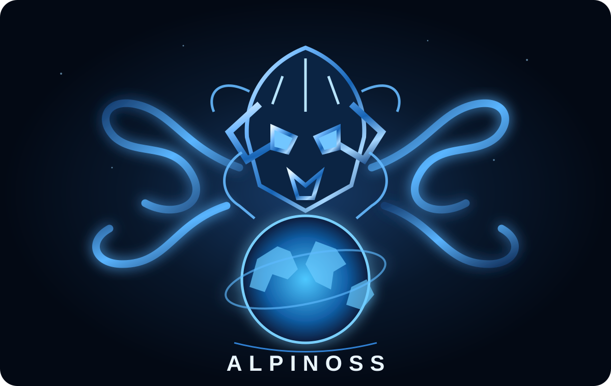

Community discovery
Product concepts for profiles, posts and conversations that help people discover relevant connections.

Explore ALPINOSSALPINOSS is an independent, multi-sector business initiative. It is the umbrella identity for current and future products, platforms, services and commercial projects across different industries. Its activities may include software, AI, automation, online services, digital commerce, marketplaces, community products and other ventures.
Pre-production · Prototype stageProduct concepts for profiles, posts and conversations that help people discover relevant connections.
A proposed space for discovering service offers, collaborations and business opportunities.
Illustrative challenges and points used to explore engagement. Demo points have no monetary value and cannot be redeemed.
Guided planning and workflow concepts. The member workspace now includes a Business Studio interface connected to the backend planning endpoint. Live AI generation remains disabled until a secure provider key is configured; no live AI output is being claimed.
ALPINOSS Payment Integrity is one technology project within the wider ALPINOSS portfolio. It is a provider-neutral prototype for screening synthetic incoming payment-event notifications. It demonstrates deterministic ACCEPT, REVIEW and REJECT decisions and duplicate-event detection.
The public browser demonstration is connected to the Render-hosted Node.js API: simulated payment events are sent to the server and evaluated there. The public demo uses temporary in-memory event storage with duplicate-event detection; it does not use the persistent PostgreSQL event-ingestion route or connect to a live bank or payment provider. The API also contains a separate authenticated event-ingestion path, PostgreSQL-backed records and HMAC-SHA256 signature verification for future integration work.
Founder: Sebastian Moczygemba
Location: Netherlands
Team: Independently developed, founder-led project.
ALPINOSS is presented here as an independent business initiative and umbrella brand. This page does not claim that a specific legal entity has been incorporated or registered.
Project contact: alpinooslpinoos@gmail.com
ALPINOSS is at pre-production prototype stage. The demonstrations do not process real payments, connect to banks or payment providers, provide production fraud detection, transfer money, or operate production customer accounts.
No paying customers, revenue, production usage, external investment, regulatory certification or production deployment are being claimed. The current business model and customer problem remain hypotheses to validate.